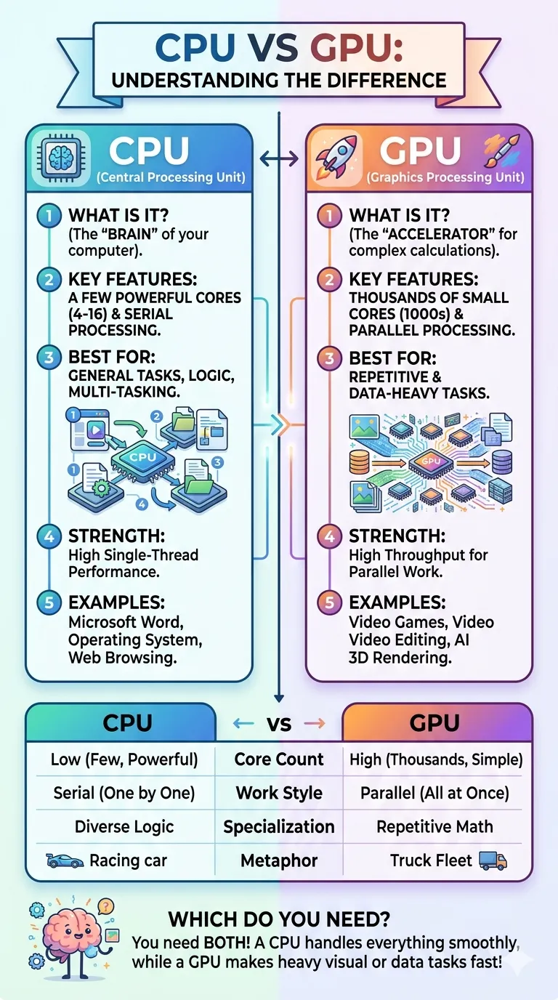
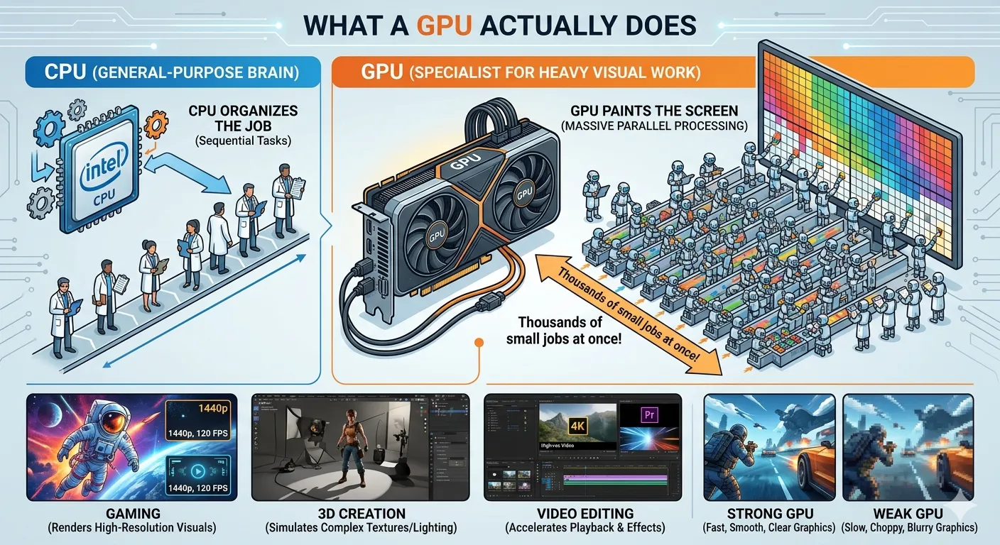
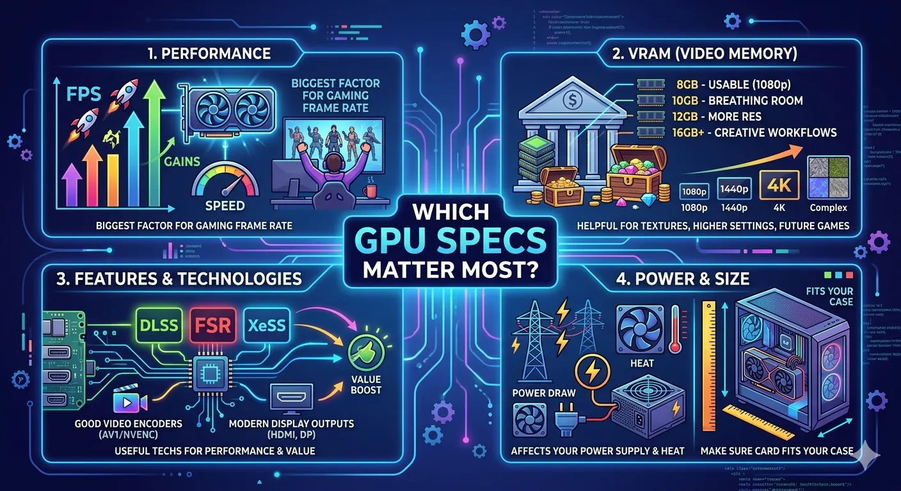
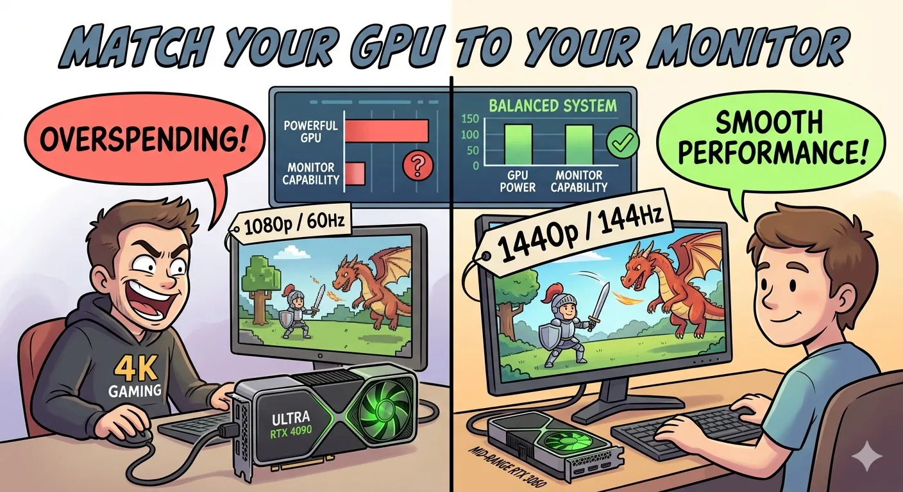
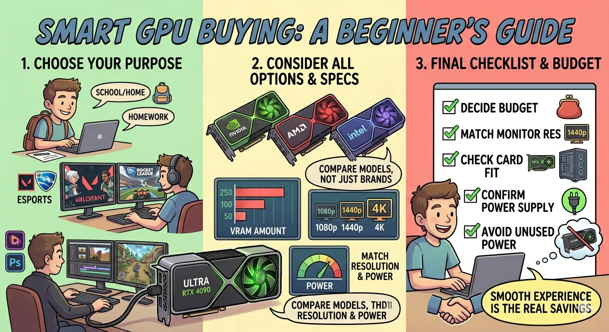

What a GPU Actually Does
A CPU is the general-purpose brain of a PC, but a GPU is a specialist built for heavy visual work. Games, 3D programs, and many modern apps need to draw huge numbers of pixels and effects very quickly. A GPU is designed to handle many small jobs at once, which makes it great for rendering graphics. That is why a graphics card matters so much for gaming and creative software.
For a general audience, the easiest way to think about it is this: the CPU organizes the job, and the GPU paints the screen. If your GPU is too weak, your computer may still turn on and work, but modern games can feel slow, choppy, or blurry because the graphics card cannot keep up.

Integrated Graphics vs Dedicated Graphics
Not every computer has a separate graphics card. Some processors include integrated graphics, which means the graphics hardware is built into the CPU package. Integrated graphics are great for web browsing, office work, streaming video, and light games. They are usually cheaper and use less power.
A dedicated GPU is a separate card installed in the motherboard. Dedicated graphics cards have their own memory, cooling, and power delivery, so they are much better for gaming, editing, and 3D work. If you want to play newer games at 1080p with good settings, a dedicated GPU is usually the best choice. If you mostly use a computer for school, email, YouTube, and documents, integrated graphics may be enough.
Integrated vs Dedicated Comparison
| Category | Integrated Graphics | Dedicated GPU |
|---|---|---|
| Performance: | Best for basic tasks | Best for gaming, editing, and 3D workloads |
| Cost: | Usually included with the CPU | Adds more cost to the system |
| Power use: | Lower power and less heat | Uses more power and needs more cooling |
| Memory: | Uses shared system RAM | Uses its own VRAM |
| Best for: | School, browsing, and streaming | Modern games, creative work, heavy visuals |

Which GPU Specs Matter Most?
Beginners often see long spec lists and assume every number is equally important. That is not true. The most important real-world factors are performance, VRAM, power draw, and feature support. VRAM is the memory on the graphics card itself. More VRAM helps when you use high-resolution textures, larger creative projects, or higher display resolutions like 1440p. In 2026, 8GB is still usable for many 1080p gamers, but 10GB to 12GB gives more breathing room for newer titles.
You should also check whether the card supports useful technologies such as modern upscaling, good video encoders, and current display outputs. Features like NVIDIA DLSS, AMD FSR, and Intel XeSS can make demanding games run better by using smart image reconstruction. These features do not replace raw power, but they can improve value.
- Performance: the biggest factor for gaming frame rate.
- VRAM: helpful for textures, higher settings, and future games.
- Power use: affects your power supply and heat.
- Size: make sure the card fits your case.

Match the GPU to Your Monitor
One of the best beginner tips is to buy for your monitor, not for bragging rights. If you use a 1080p screen, you do not need to overspend on a card meant for high-end 4K gaming. For most people, the sweet spot is still 1080p or 1440p. A good midrange GPU can make 1080p look excellent while keeping costs under control.
Refresh rate matters too. A 144Hz monitor can show smoother motion than a 60Hz display, but only if your PC can produce enough frames. That is why balance matters. An expensive monitor with a weak GPU, or a powerful GPU with a basic office monitor, can both be awkward combinations. Build around the experience you actually want.

How Beginners Should Choose a GPU in 2026
If you are buying your first graphics card, start with your main use. For everyday school and home use, integrated graphics or an entry-level card is often fine. For esports titles like Fortnite, Valorant, or Rocket League, a budget or lower-midrange GPU can be enough. For newer single-player games, video editing, or streaming, you will likely want a stronger card with more VRAM and better cooling.
Try not to compare cards by brand name alone. NVIDIA, AMD, and Intel all make options worth considering. Compare the actual model, how much VRAM it has, what resolution you want to play at, and whether your power supply can support it. Also think about noise, heat, and upgrade plans. A smart purchase is not always the absolute cheapest card. It is the card that gives you the smoothest experience for the money you are comfortable spending.
For beginners, the best GPU buying checklist is simple: decide your budget, match your monitor resolution, make sure the card fits your case, confirm your power supply can handle it, and avoid paying extra for performance you will never use.